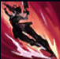

Samira

| Samira The Desert Roze | |
|---|---|
| Release date | 21.09.2020 |
| Class | Marksman |
| Positions | Bot |
| Resource | Mana |
| Range type | Ranged |
| Adaptive type | Physical |
| Base statistics | |||
| Health | 560 – 2022 | Resource | N/A |
| Health regen. | 7.5 –15.55 |
Mana regen. | 8.176-20.08 |
| Armor | 33 – 99.75 | Attack damage | 64 – 115 |
| Magic resist. | 32 – 53.25 | Crit. damage | 175% |
| Move. speed | 335 | Attack range | 500 |
Samira privește moartea în ochi cu o încredere debordantă în forțele proprii, căutând pericolul peste tot pe unde ajunge. După ce așezarea shurimană în care a crescut a fost distrusă pe când era copil, Samira și-a găsit adevărata chemare în Noxus, unde și-a construit o reputație de războinică îndrăzneață și stilată, îndeplinind misiuni de cel mai înalt calibru. Înarmată cu pistoale încărcate cu pulbere neagră și cu o sabie creată special pentru ea, Samira adoră confruntările pe viață și pe moarte, eliminând cu stil pe oricine-i stă în cale. | IMPULS ÎNDRĂZNEȚ Samira creează o combinație lovind cu atacuri sau abilități unice față de lovitura anterioară. Atacurile Samirei în rază melee provoacă daune magice suplimentare. Atacurile Samirei împotriva inamicilor afectați de imobilizări o fac să se năpustească în raza de atac. Dacă inamicul este aruncat în sus, îl menține aruncat în sus pentru scurt timp |
|||
|---|---|---|---|---|
 |
FLER Samira lansează un glonț sau lovește cu sabia, provocând daune. Dacă folosește abilitatea în timpul ''Năpustirii sălbatice'', lovește toți inamicii din calea ei la sfârșitul năpustirii. | |||
ROTIREA SABIEI Samira lovește cu sabia în jurul ei, provocându-le daune adversarilor și distrugând proiectilele inamice |
||||
|  |
NĂPUSTIRE SĂLBATICĂ Samira se năpustește printr-un adversar sau un aliat, lovind inamicii prin care trece și primind viteză de atac bonus. Dacă ucide un campion inamic, timpul de reactivare al acestei abilități se resetează. |
|||
DECLANȘAREA INFERNULUI Samira dezlănțuie un torent de lovituri, atacând cu sălbăticie toți inamicii din jurul ei |